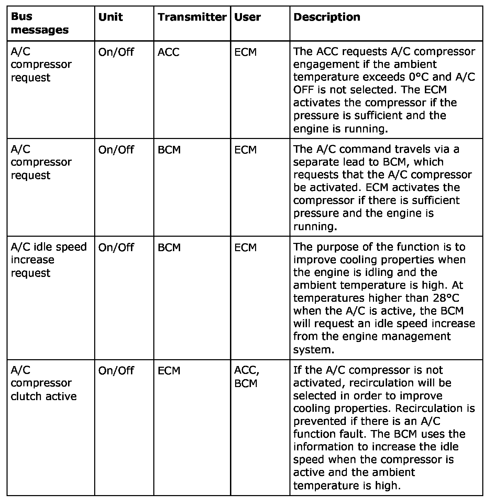

Operation CHARM
: Car repair manuals for everyone.
Home
>>
Saab
>>
2011
>>
9-3 FWD (9440) L4-2.0L Turbo
>>
Repair and Diagnosis
>>
Heating and Air Conditioning
>>
Description and Operation
>>
Climate System - Heating and Ventilayion
>>
Bus Messages, A/C
Bus Messages, A/C
Bus Messages, A/C
For a detailed description of the car's bus system, see bus and diagnostics communication, detailed description.
